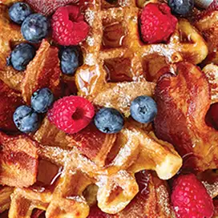

Bacon Waffle Bake

Description
Get your holidays off to a perfect start with a delicious bacon waffle bake with Smithfield® bacon.
Ingredients
- 12 ounces Smithfield® Hometown Original Bacon, cooked and cut into 1-inch pieces
- 8 square waffle (4" square) (include frozen)s waffles, freshly made or frozen packaged, quartered
- 2 tablespoons butter, divided
- 6 large egg yolks egg yolks
- 1 ½ cups buttermilk
- 1 cup whipping cream
- ⅔ cup maple syrup, divided
- 1 teaspoon vanilla extract
- ¼ teaspoon salt
- 1 ½ cups mixed fresh berries, such as blueberries, strawberries and blackberries
- 1 teaspoon Powdered sugar
Steps
- Preheat oven to 350 degrees F. Lightly grease 3-quart oven-safe casserole (8 x 10-inch or similar) with 1/2 tablespoon butter. In large bowl, whisk together egg yolks, buttermilk, cream, 1/3 cup syrup, vanilla and salt; reserve.
- On ungreased rimmed baking pan, spread waffle pieces in even layer and bake for 12-15 minutes or until crisp and lightly toasted. Increase oven temperature to 375 degrees F.
- Add waffle pieces and bacon to buttermilk mixture and toss to coat evenly. Pour into prepared casserole and tightly cover with foil.
- Bake for 45-50 minutes and remove foil. Melt remaining butter and brush over top of casserole and bake, uncovered, for another 10-15 minutes or until top is crisp and toasted. Top with fresh berries and remaining maple syrup, dusting with powdered sugar if desired, and serve warm.